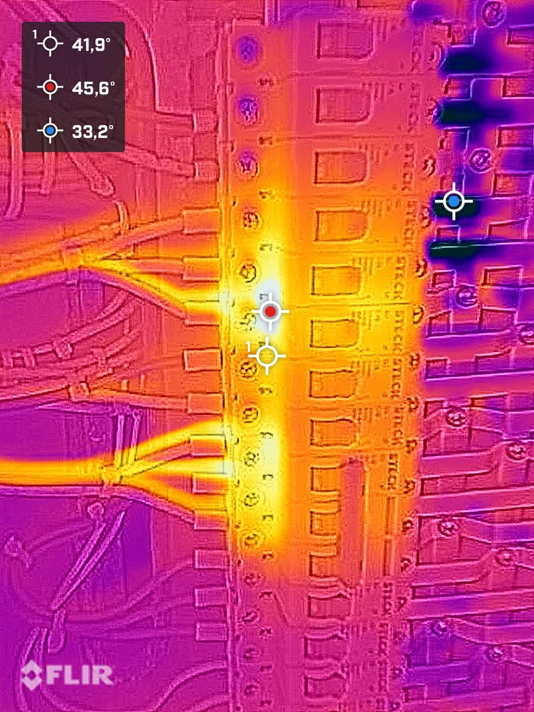
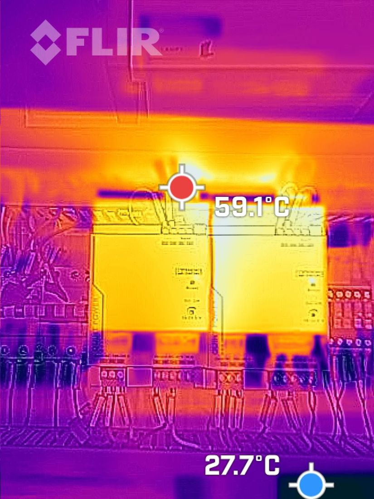
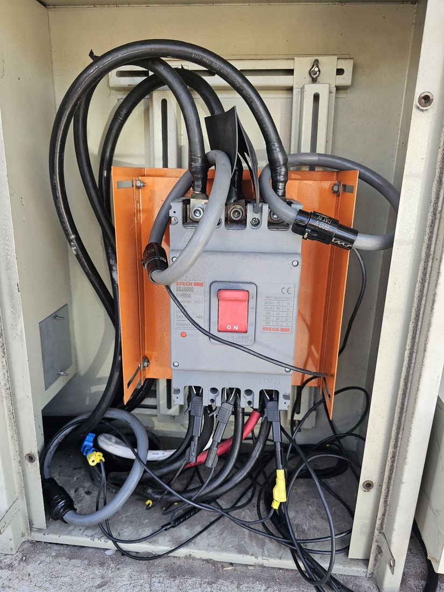
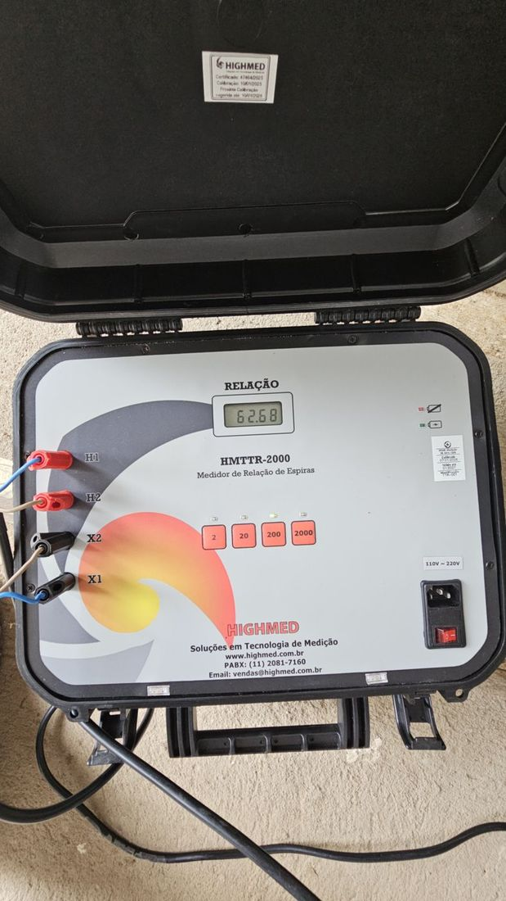

Laudo de instalações elétricas
Inspeção e medições da instalação de baixa e média tensão, com relatório e ART.
Laudos, termografia e qualidade de energia
Inspecionamos, medimos e entregamos um laudo claro: o que está certo, o que precisa de correção e o que fazer primeiro.

O escopo exato de cada obra vem na proposta.
Qual laudo é o seu?
Na primeira conversa vemos o que você precisa e indicamos o laudo certo.
Inspeção e medições da instalação de baixa e média tensão, com relatório e ART.
Imagem térmica de painéis e conexões para achar ponto quente antes de virar falha.
Medição com analisador de rede durante dias, para entender oscilações, desequilíbrios e consumo.
Como funciona
O prazo depende do tamanho da instalação e do período de medição, no caso do analisador.
Obras



Normas
O laudo compara o que foi medido com o que a norma pede, e diz com clareza o que precisa mudar.
O laudo é emitido por engenheiro eletricista, com ART. Cada seguradora e o Corpo de Bombeiros têm as suas exigências, então peça a lista de itens e nós montamos o laudo de acordo.
É a imagem térmica de quadros, barramentos e conexões. Ponto quente costuma indicar conexão frouxa ou sobrecarga, e aparece antes de virar falha. Vale fazer com a instalação em carga, em inspeção de rotina ou quando há suspeita de problema.
Instalamos um analisador de rede no quadro por alguns dias, registramos tensão, corrente e variações, e entregamos o relatório com a análise. Também alugamos o analisador com técnico habilitado.
Depende do porte e do escopo, então não há preço fechado sem conhecer o caso. Mande os dados pelo WhatsApp e retornamos com a proposta.
Tipo de imóvel, cidade e para quem é o laudo já bastam para começar.